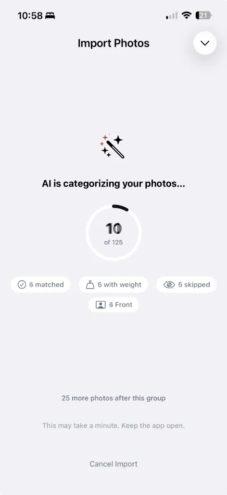
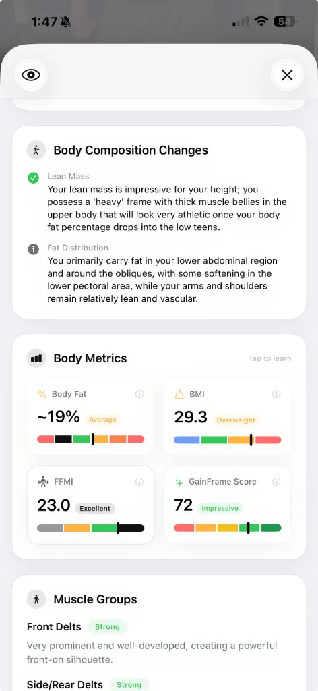

7 Best Body Transformation Apps in 2026 (Ranked & Compared)
Most progress photo apps feel like they were built in 2018 and never updated. We tested every major option to find which ones actually help you track a body transformation — and which ones are wasting your time.
The beta is live — try it free.
Join the Beta on TestFlightThe problem with most body transformation apps
If you've ever searched for a progress photo app, you already know the pain. Most of them feel outdated, require an unreasonable amount of manual setup, and give you limited, poorly formatted results. Some demand a tripod, controlled lighting, and very specific poses before they'll even produce a useful comparison.
That's fine if you're a bodybuilding coach prepping clients for stage. But if you're a regular person who takes gym selfies and wants to actually see what's changing? You shouldn't need a photography studio to track your body.
We tested every major body transformation and progress photo app on the market to see which ones are actually worth your time in 2026. We ranked them on five criteria:
- Ease of import — How painless is it to get photos in?
- AI analysis — Does it tell you something useful, or just store your photos?
- Comparison tools — Can you actually see what changed?
- Workout integration — Does it connect your training to your progress?
- Output quality — Are the reports worth sharing, or embarrassing?
1. GainFrame — Best overall body transformation tracker
Platform: iOS (TestFlight beta) · Price: Free during beta
GainFrame is the only app on this list that does everything: import your photos automatically, run AI body composition analysis on them, connect your workout data, and generate polished reports you'd actually want to share.
The core philosophy is simple: you do the training, GainFrame does all the dirty work, and you get the nice polished results.
What sets it apart
Smart Import: You don't have to manually select and crop every photo. Point GainFrame at an album — or sync it permanently — and the AI categorizes your photos automatically. It filters out non-progress photos, sorts them by pose, and even removes duplicates by keeping only the highest-scored photo for each pose, each day.

AI Body Composition: Every photo gets a full Deep Dive analysis — estimated body fat %, BMI, FFMI, a 0–100 GainFrame Score, and individual ratings for 12 muscle groups. This isn't a generic "you look fit" assessment. It's specific, data-driven feedback like "Your lean mass is impressive for your height; you possess a 'heavy' frame with thick muscle bellies."

Side-by-Side Comparison with AI Insights: When you compare two photos, GainFrame doesn't just put them next to each other. It quantifies exactly what changed — body fat dropped 2%, FFMI went up 0.5, shoulder capping is more aggressive, waist looks narrower. Then it gives you actionable recommendations: "High-Protein Deficit," "Upper Chest Focus," "Incline LISS Cardio." It even calculates your daily macros.

Hevy Workout Integration: If you use Hevy to track your lifts, GainFrame auto-attaches that day's workout to the progress photo. You can see exactly what you trained alongside what you looked like. No other progress photo app does this.

AI Future Physique Prediction: This is the feature no other app has. GainFrame analyzes how 12 muscle groups have changed between two progress photos, factors in your age, weight, goal (gain muscle, lose weight, or recomp), and training commitment level. Then it generates an AI prediction of what you could look like in 12 months — complete with projected body fat, weight, and GainFrame Score.

Bottom line: GainFrame is the only app that turns your gym selfies into actionable data without requiring a tripod, controlled lighting, or hours of manual setup. It does the dirty work so you get clean, shareable results.
2. Metamorph — Best for time-lapse transformation videos
Platform: iOS App Store · Price: Free with Pro subscription
Metamorph focuses on capturing consistent progress photos using auto-alignment overlays and customizable reminders. Its standout feature is the ability to compile photos into time-lapse or before-and-after videos you can share on social media.
Strengths: Privacy-first (photos stay on device or iCloud), good alignment tools, solid reminder system. The time-lapse videos are genuinely impressive when you've accumulated months of data.
Weaknesses: No AI analysis of any kind — it doesn't estimate body fat, score your physique, or tell you what changed. It's a photo storage and alignment tool, not an analysis tool. You're still doing all the interpretation yourself.
Best for: People who want polished time-lapse videos of their transformation and don't need AI-generated insights.
3. Progress — Best for minimalist photo tracking
Platform: iOS App Store · Price: Free with Pro subscription
Progress is a simple, well-designed app for organizing progress photos by day, week, or month. It's straightforward — take or import photos, organize them, and scroll through to see your journey.
Strengths: Clean interface, easy to use, no learning curve. It does one thing — stores and organizes your photos — and does it well.
Weaknesses: No body fat estimation, no scoring, no AI analysis, no workout integration. No comparison reports. It's essentially a specialized photo album with a reminder system.
Best for: People who just want a dedicated space for progress photos separate from their camera roll, with zero complexity.
4. Snaptrack — Best for consistent photo alignment
Platform: iOS App Store · Price: Free with in-app purchases
Snaptrack's "Body Overlay" feature helps you take consistently aligned photos by showing a translucent guide overlay. It includes reminders and basic before-and-after tools.
Strengths: The body overlay alignment is helpful for ensuring consistency. Good for someone building a habit of taking weekly photos.
Weaknesses: No AI, no body composition data, no integrations. The comparison tools are basic side-by-side placement with no analysis or insights. You're the one who has to decide whether you've made progress.
Best for: Beginners who need help building the habit of taking consistent progress photos.
5. My Body Tracker: PhotoJourney — Best camera guide tools
Platform: iOS App Store · Price: Free with Pro subscription
PhotoJourney offers a "Ghost Mode" camera guide and can create time-lapse transformation videos. It supports body measurements and manual data tracking.
Strengths: Ghost Mode helps with alignment, time-lapse videos are a nice touch, and manual measurement tracking adds extra data points.
Weaknesses: Users on the App Store have reported photos getting randomly deleted — a dealbreaker for a progress tracking app. No AI analysis. The interface feels dated compared to newer options.
Best for: People who want ghost-overlay camera guidance with manual body measurements. (But backup your photos.)
6. Formfy — Best for quick body fat scans
Platform: iOS App Store · Price: Free with subscription
Formfy offers AI body fat estimation from a single full-body photo, plus meal photo scanning for calorie counting. It's positioned as an all-in-one fitness and nutrition tracker.
Strengths: The one-photo body fat scan is fast and convenient. The meal scanning is a useful bonus feature if you're tracking calories.
Weaknesses: No side-by-side comparison, no timeline tracking, no workout integration. It gives you a snapshot-in-time body fat estimate, but doesn't help you track changes over weeks and months. There's no scoring system or muscle group analysis.
Best for: People who want a quick body fat estimate without needing a full tracking system.
7. Recomp AI — Best for body recomposition focus
Platform: iOS App Store · Price: Free with subscription
Recomp AI is an AI body scanner built specifically for body recomposition tracking. It estimates body fat, lean mass, and physique changes, with nutrition tracking support.
Strengths: Focused specifically on the body recomp use case. AI scanning provides body fat and lean mass estimates.
Weaknesses: No photo timeline or long-term progress tracking. No comparison features. No workout integration. It's oriented around individual scans rather than tracking a transformation over time.
Best for: People specifically going through a body recomposition who want AI-estimated body fat without the broader tracking features.
How the best body transformation apps compare
| Feature | GainFrame | Metamorph | Progress | Snaptrack | Formfy | Recomp AI |
|---|---|---|---|---|---|---|
| AI Body Fat % | ✅ | ❌ | ❌ | ❌ | ✅ | ✅ |
| Muscle Group Scoring | ✅ 12 groups | ❌ | ❌ | ❌ | ❌ | ❌ |
| AI Comparison Reports | ✅ with recs | ❌ | ❌ | ❌ | ❌ | ❌ |
| Future Physique Prediction | ✅ | ❌ | ❌ | ❌ | ❌ | ❌ |
| Workout Integration | ✅ Hevy | ❌ | ❌ | ❌ | ❌ | ❌ |
| Auto Photo Import | ✅ Album sync | Manual | Manual | Manual | Manual | Manual |
| Duplicate Removal | ✅ Auto | ❌ | ❌ | ❌ | ❌ | ❌ |
| Shareable Reports | ✅ | Time-lapse | ❌ | ❌ | ❌ | ❌ |
| Tripod Required | No | Recommended | No | Recommended | No | No |
The verdict
If you just need a photo album with reminders, Progress or Snaptrack will do the job. If you want slick time-lapse videos, Metamorph is your best bet.
But if you want your progress photos to actually tell you something — body fat trends, muscle group improvements, actionable training recommendations, and a prediction of where you're headed — GainFrame is the only app in 2026 that does all of that, without requiring a tripod or a degree in photo editing.
You do the training. GainFrame does the analysis. And the reports look so good you'll actually want to share them.
Related posts
- Best Body Fat Calculator from Photo: Why AI Beats Smart Scales
- How to Track Body Recomposition with Photos
- How to Measure Muscle Gain Without a Scale
- GainFrame + Hevy: The Ultimate Physique Tracking Stack
- What Comparing Progress Photos Looked Like Before GainFrame
Try GainFrame free
AI body composition from your progress photos. No account needed.
Join the Beta on TestFlightRequires iOS 17+ · iPhone only